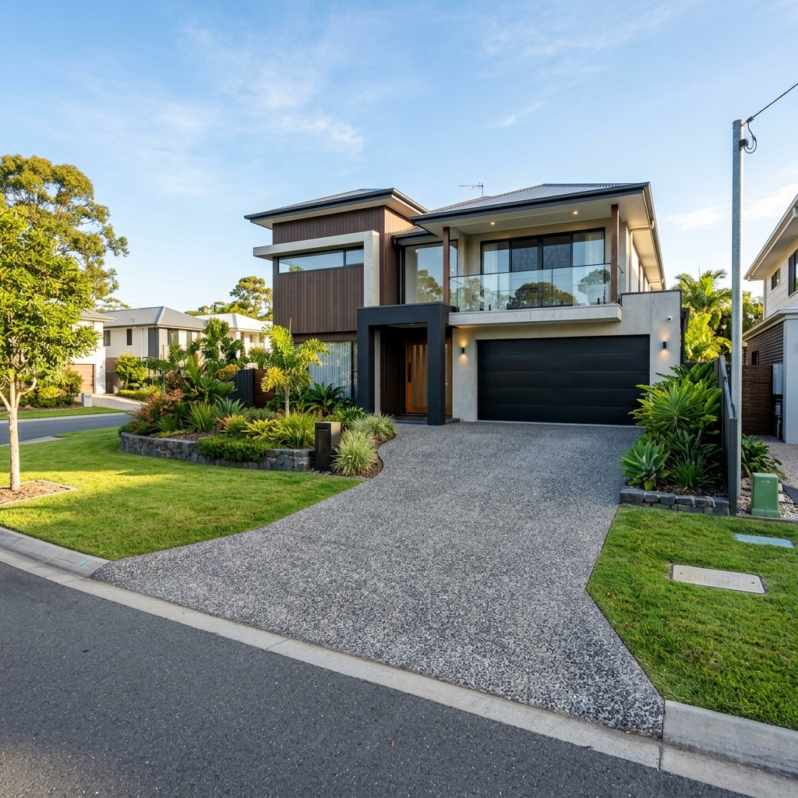
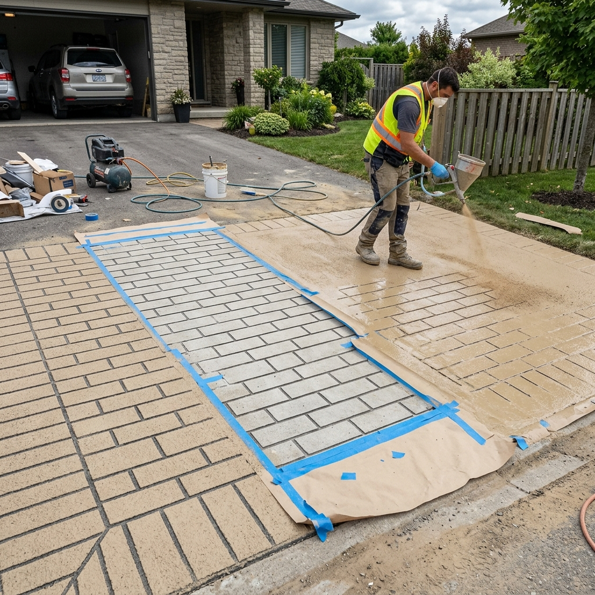
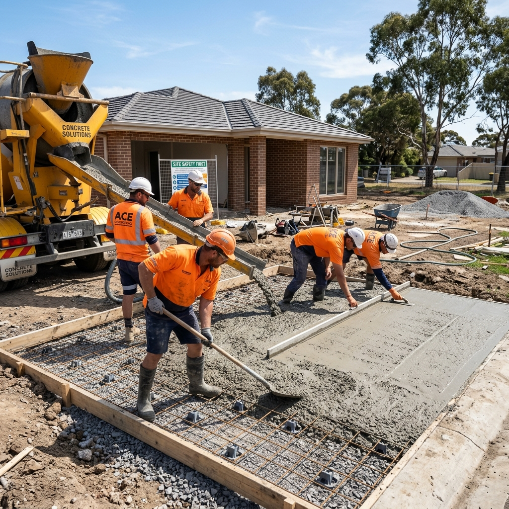

From luxury exposed aggregate driveways and covercrete resurfacing to stencil concrete driveways, stamped concrete, and precision house slabs — we deliver high-durability decorative concrete solutions across the Gold Coast and Brisbane southside, complying with AS 3600.
Fill out the form below and our local team will contact you for a site measurement shortly.
Specialists in stencil concrete driveways, stamped concrete, and textured concrete driveways Gold Coast. We create custom stencil concrete patterns including grey stencil, slate, cobblestone, and geometric designs. Our concrete stencilling transforms plain slabs into stunning decorative driveways complying with City of Gold Coast specs.
Get a Stencil Quote →Premium exposed aggregate driveways in a wide range of exposed aggregate colours — charcoal, caramel, mocha, ocean floor, and more. We pour slip-resistant exposed aggregate concrete for driveways, exposed aggregate patios, pool surrounds, and alfresco areas. Ask us about aggregate concrete colours and mix options.
Get an Aggregate Quote →Breathe new life into old, cracked slabs with our covercrete driveway resurfacing. We apply polymer-modified covercrete spray coatings in a full range of covercrete colours, combined with concrete stencil patterns for a before-and-after transformation. Ideal for driveway restoration and driveway crack repair across the Gold Coast and Brisbane.
Get a Covercrete Quote →Full-service decorative concreting including precision house slabs, garage/shed slabs, decorative concrete services for patios and alfresco, stencilled garden paths, and concrete boxing. As leading decorative concrete contractors on the Gold Coast, we handle everything from decorative driveways to structural slabs.
Get a Slab Quote →
Exposed AggregatePremium slip-resistant concrete driveway using local gold pebbles and charcoal base mix, sealed for long-lasting sheen.

ResurfacingComplete driveway restoration using polymer spray-on covercrete, slate border stencil patterns, and double UV sealer.

Driveways & CrossoversConstructed concrete crossover conforming with City of Gold Coast specifications: N32 concrete strength and SL82 reinforcement steel mesh.
To prevent cracks in concrete driveways, we pour a minimum of N25 (25MPa) for paths and patios, and upgrade to N32 (32MPa) for all decorative concrete driveways, crossovers, and heavy-vehicle areas. Stronger concrete means fewer driveway crack repairs for you down the track.
For covercrete resurfacing and stencil concrete driveways, surface preparation is everything. We grind, clean, and prime the existing slab before applying polymer-modified covercrete base coat — ensuring the coating bonds correctly and the stencil concrete pattern looks crisp and sharp for years.
We offer one of the widest selections of exposed aggregate colours in South East Queensland — including charcoal, golden amber, ocean floor, red jasper, and mocha blends. Our aggregate concrete colours are matched to complement your home's facade and landscaping, with the most popular exposed aggregate colour being our Charcoal River Pebble mix.
Every decorative concrete job — whether stencil concrete, exposed aggregate, or covercrete driveway — is finished with two coats of high-build, UV-resistant solvent-based acrylic sealer. This protects the colour, enhances sheen, and dramatically extends the life of your textured concrete driveway surface.
We mark out the area, excavate the organic soil to a required depth (typically 150mm to allow for base and concrete), dump and compact the subgrade using high-impact vibrating plates, and lay a compacted roadbase or gravel layer.
We erect sturdy timber formwork secured with steel stakes to define the layout. We then place plastic bar chairs and lay steel reinforcing mesh (SL72/SL82), securing it together to guarantee a strong internal skeleton.
Concrete is poured (using pump hire if accessibility is limited), screeded, and floated to create a flat, even surface. Depending on your choice, we apply a transverse heavy broom finish (non-slip), stencil patterns, or spray-coat color oxides.
We wash off the surface retardant for exposed aggregate, apply concrete curing compounds to control moisture, cut expansion joints to manage cracking, and finish the job with two coats of UV-resistant solvent-based acrylic sealer.
When it comes to concrete construction, shortcuts lead to expensive cracks. We build structural concrete slabs, decorative driveways, and council crossovers to the absolute highest specifications, ensuring durability that stands the test of time.
We hold active QBCC building licenses and $10M public liability insurance for your peace of mind.
We strictly follow AS 3600 (Concrete Structures) and AS 2870 (Residential Slabs), using premium SL82 mesh and minimum N28/N32 concrete strength.
We handle all Council drawings, applications, and pre-pour inspections for vehicular crossings (VXO).
We ensure no construction waste or concrete slurry is left behind. Your site is left gleaming and clean.
From excavation and compacted roadbase to concrete finishing and high-durability acrylic sealing, we get the job done right the first time.
Request Free Site MeasureWe are active across the northern corridor of the Gold Coast. Whether you are building a new home in the Gainsborough Greens estate, living near Yawalpah Road, Dixon Drive, or commuting from Coomera or Ormeau, we have local teams in Pimpama ready to quote.
A: Covercrete (also spelt cover crete) is a polymer-modified cement overlay spray-applied over existing concrete. Unlike plain grinding, covercrete driveway resurfacing allows you to choose from a wide range of covercrete colours and add concrete stencil patterns — giving you a brand-new look without the cost of a full replacement. It is one of the most cost-effective driveway restoration solutions in Brisbane and the Gold Coast.
A: The most popular exposed aggregate colour in South East Queensland is Charcoal River Pebble, followed by Golden Amber and Ocean Floor blends. We offer a full range of exposed aggregate concrete colours and aggregate colours to suit every home style — from modern charcoal to warm caramel tones. We can bring a sample board to your property so you can choose the right exposed aggregate colours in natural light.
A: Stencil concrete (also called stencilled concrete driveway or stenciling concrete) uses a physical stencil mat pressed into freshly poured or resurfaced concrete to create a pattern like slate, cobblestone, or tile. Stamped concrete (or stamped driveway) uses a rubber mat stamped into wet concrete for a 3D texture. Both are forms of decorative concrete driveways. We specialise in both across Brisbane and the Gold Coast.
A: Minor cracks in concrete driveways can be repaired with flexible polyurethane crack injection or routing-and-sealing. For widespread cracking, the best solution is often a full covercrete driveway resurfacing — which covers existing driveway crack repairs, applies a fresh textured surface, and adds UV sealer. Severe structural cracking may require a full slab replacement. We provide free on-site assessments to recommend the right driveway repair solution.
A: Plain concrete starts around $65–$95/m². Exposed aggregate driveways range from $90–$140/m². Covercrete resurfacing is typically $45–$85/m². Stencil concrete driveways and stamped concrete range from $70–$120/m² depending on pattern complexity. How much do concreters charge? It depends on site access, slope, size, and finish — contact us for a free itemised quote.
A: The main disadvantages of exposed aggregate concrete include: (1) the porous surface can harbour moss/mildew if not sealed regularly; (2) small children and pets may find the texture uncomfortable; (3) it costs more upfront than plain broom-finish concrete. However, the advantages — slip resistance, stunning exposed aggregate colours, and durability — far outweigh these for most homeowners. Re-sealing every 3–5 years keeps it looking pristine.
A: Driveways inside your property boundary generally don't require permits. However, the crossover — the section from your property line to the road kerb — requires a Vehicular Crossing (VXO) permit from the City of Gold Coast. We manage the full application and drawings process for concrete driveways and crossovers, ensuring N32 concrete and SL82 mesh specs are met.